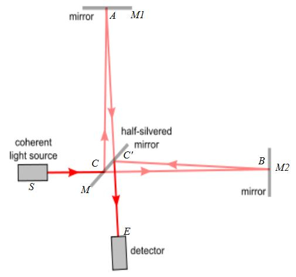
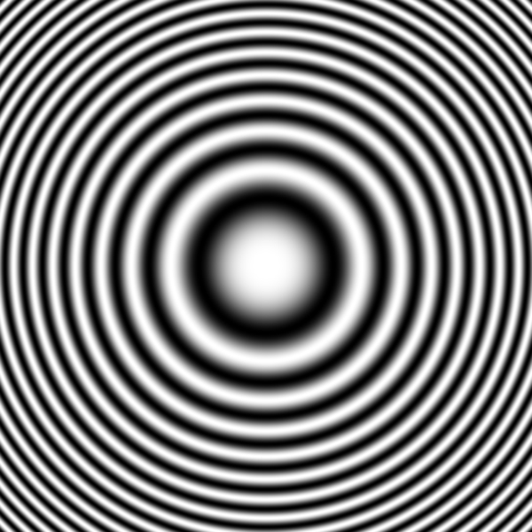

Or What Do You Mean They Can Be Both Zero And One At The Same Time!
By David Kemp
@david_b_kemp
DRAFT
This is Part 1 of a two part series.
It covers some basics of quantum qubits.
Part 2
actually looks at a simple quantum algorithm in action.
Quantum Computers?
Heard of quantum computers?
Heard that they are faster than conventional computers?
Perhaps you have heard of quantum bits (abbreviated to qubits).
Maybe you have even heard of the puzzling notion that
qubits can have the values 0 and 1
both at the same time.
Let me try to explain what this really means.
Conventional Bits
I assume you know what binary bits are.
For instance, 110 is binary for six.
See
Wikipedia
for more about binary numbers.
Conventional bits are represented using many different approaches:
e.g. using two different voltages on a wire,
points on a magnetic disk magnetized in different directions,
pulses of light on a glass fibre,
etc. etc.
Qubits
Just like bits, qubits have a binary state.
Qubits represent 0 and 1 using quantum phenomenon like
the nuclear spin direction of individual atoms.
e.g. use “clockwise” for 0 and “anti clockwise” for 1.
Conventionally called “spin up” and “spin down”.
Quantum spin is a bit like spinning things in the classical world,
but has some very important differences we will touch on in a moment.
0
1
The NOT operator
Consider the conventional NOT (or bit-flip) operator.
0 and 1 can represent logical true and false.
NOT true is false, and NOT false is true.
And so, NOT of 1 is 0, and NOT of 0 is 1.
For example, performing a NOT operation on the right most bit of the binary number 111
flips the target bit and results in 110.
In what follows, it will be convenient to represent the state of a system by listing all possible states
and placing a blue disk next to the current state.
Click the button labelled “Not bita”
to apply the NOT operation to the left bit,
and click the button labelled “Not bitb”
to apply the NOT operation to the right bit:
There is nothing quantum mechanical about these first few interactive examples.
Their main purpose is to get you used to this style of presentation.
State:
Random NOT
Random NOT: A NOT operator that has a specified chance of flipping a bit.
Although not very common, it is still just a classical (non-quantum) operator.
Consider applying a “Random NOT” twice to a bit whose initial value is 0,
where the NOT has, for instance, a 30% chance of flipping the bit.
What is the probability of the final state being 0?
There are a couple of possible scenarios.
For instance, the first Random NOT might flip the bit from 0 to 1,
and the second Random NOT might flip the bit back to 0.
We represent this as:
0 → 1 → 0
There are two paths leading to a final state of 0:
0 → 0 → 0 with probability of 0.7 x 0.7 = 0.49
0 → 1 → 0 with probability of 0.3 x 0.3 = 0.09
And so the final state will be 0 with a probability of 49% + 9% = 58%
Random NOT (your turn)
Next we provide an interactive animation of the Random NOT operator.
The blue disk now splits in two so that we can track the different possible outcomes.
The probability of being in a state is represented by the radius of the disk.
Press the “Random NOT” button multiple times and
note how the arrows add head to tail.
Still nothing quantum mechanical about any of this.
We are still just warming up.
State:
Measurement
We have seen how a random NOT operator can
cause a conventional computer to have various probabilities
of being in different states.
Of course
in reality it is in only one of those states.
We just don't know which one.
Strangely, this is an assumption about reality that we will need to reconsider
later in this article.
If you peek at the system to determine its actual state,
then the probabilities all collapse
so that one state has a probability of 1,
and all the others have a probability of 0.
Remember, the larger the blue disk,
the more likely the system will turn out to be in that state.
In quantum computing,
the word measurement refers to this act of peeking.
Press the “Random NOT” button multiple times
and then press the “measurement” button.
Note that there is still nothing quantum mechanical about this yet.
That comes next!
State:
Hadamard of 0
The Hadamard is a special quantum operator that can be applied to qubits.
Warning: this first look at quantum operators will be pretty boring.
I promise it will get exciting soon.
As you will see below, the Hadamard initially seems like a Random NOT with 50% chance of success.
In this interactive example,
I purposely disable the Hadamard button after you press it.
Later in this article we will see what happens when you apply the Hadamard twice in a row.
State:
Nothing unusual about that was there?
But you will be surprised by what comes next...
Hadamard of 1
Things start to get weird when you look at the Hadamard of 1.
Look carefully at the arrow directions.
Once again, for now, the Hadamard button is disabled after you press it
State:
Huh?
Phase
Confused?
You should be if this is all new to you.
Please hang in there for a while longer.
The arrow directions represent what physicists call phase:
it is an abstract concept of quantum mechanics.
it has no “common sense” interpretation.
it can only be measured indirectly.
In the case of nuclear spin,
phases can be manipulated by applying electric and/or
magnetic fields.
We will see the importance of phase in a moment,
but first let's look at another interesting quantum computing operator...
T Operator
The T operator rotates the phase of 1, but leaves 0 untouched.
Note how it does not affect the probabilities at all.
State:
Measurement Revisited
Recall:
Measurement causes the system to collapse to a single state.
The larger the blue disk, the more likely the system will collapse to that state.
Once the system has collapsed to a particular state,
it will remain in that state until another operation is performed.
Important: Phases do not directly affect the outcome of measurements.
I.e. measurements are not affected by arrow directions.
State:
Quantum Interference
Consider what happens when we apply a Hadamard operation twice.
Let's assume that a qubit is initially known to definitely be in a 0 state.
If you were to apply the Hadamard to it twice in a row,
then there are four equally likely scenarios:
Recall that “x → y → z”
means “the qubit starts with a value x,
the first Hadamard results in the qubit having the value y,
and the second Hadamard results in the qubit having the value z”.
0 → 0 → 0
0 → 0 → 1
0 → 1 → 0
0 → 1 → 1
So the final state should be equally likely to be 0 or 1 but,
in reality,
applying the Hadamard operator twice in a row
always returns the qubit to its original state.
In our case, where the qubit is initially 0,
two applications of the Hadamard will result in it being 0 again.
Try it out.
Press the “Apply Hadamard” button twice
and watch it return to being 100% in the 0 state.
State:
Totally confused?
If quantum mechanics hasn't profoundly shocked you, you haven't understood it yet.
Neils Bohr
What is going on here?
The state of the qubit after the first Hadamard
is a simple combination of both 0 and 1.
The second Hadamard is applied to both the 0 and 1 states
and the results are combined.
The arrows still add head to tail.
For the maths to work,
the arrow lengths now have to represent
the square root of the probability.
We will briefly cover this in more detail in part 2.
The two different scenarios ending in a 1 state have opposite phases
and so they cancel each other out.
This process of phases causing possible outcomes to cancel or re-enforce
is what physicists call interference.
This is what philosophers of physics loose sleep over.
Different kinds of uncertainty
We are actually dealing with two different kinds of uncertainty:
It is possible that a bit, and even a qubit,
may be in a fixed state of 0 or 1,
but that you simply do not know which one it is.
However, it is also possible for
a qubit to be in what is called
a “superposition”
of both 0 and 1.
Such a qubit is in a strange combination of both 0 and 1.
Superposition of locations
So far, the rather abstract phenomenon of nuclear spin is
the only approach that I have mentioned for creating qubits.
The bizarre nature of quantum physics is perhaps more obvious
when you discover that particles of light and matter can be
in superpositions of different locations.
The photons travelling through an “interferometer”
are in superpositions of locations that can be kilometres apart
(as they are in the
LIGO
interferometer).
A simple interferometer is shown below.
Photons are emitted by a “coherent light source”
(i.e. a laser)
that is pointing at a
“half silvered mirror”,
which reflects some of the light and lets some of the light through.

Individual photons end up in a superposition of
having been reflected
and having been let through.
A couple more mirrors are used to bring the split light beam back together
at a detector.
The positions of the mirrors and the detector all effect the lengths of
the two different paths,
so that one path can be longer than the other.
Like the T operator described earlier,
a change in the relative path lengths will alter
the relative phases of the two photon states.
A difference equal to the wavelength of light is enough to
change the relative phases by an entire 360 degrees.
If the phases are exactly opposite,
then they will cancel each other out,
and the detector will not detect anything.
The resulting effect will be an alternating series of light
and dark concentric rings like those shown below.

This interference effect even happens when
the light source is slowly emmitting photons
one at a time.
If detectors are placed on either or both of the two paths,
then the act of detecting the presence (or absence) of the photon
causes the superposition to collapse to one or the other,
and the interference effects disappear.
It gets even more interesting when you have more than one qubit
The quantum weirdness rises to a whole new level when there are two or more qubits interacting.
This is explored in Part 2.
If you want to experiment with various single qubit quantum operations first,
then have a play with the
Quantum Computer Gate Playground